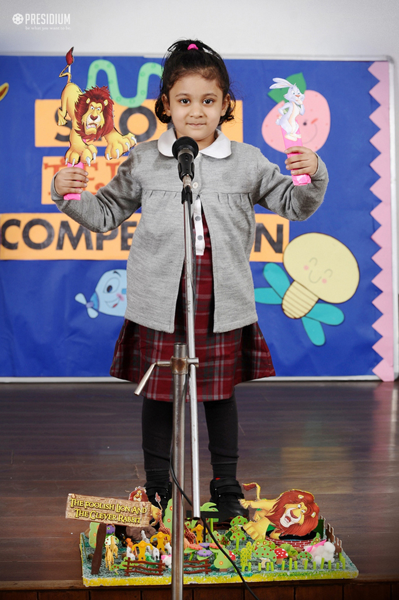
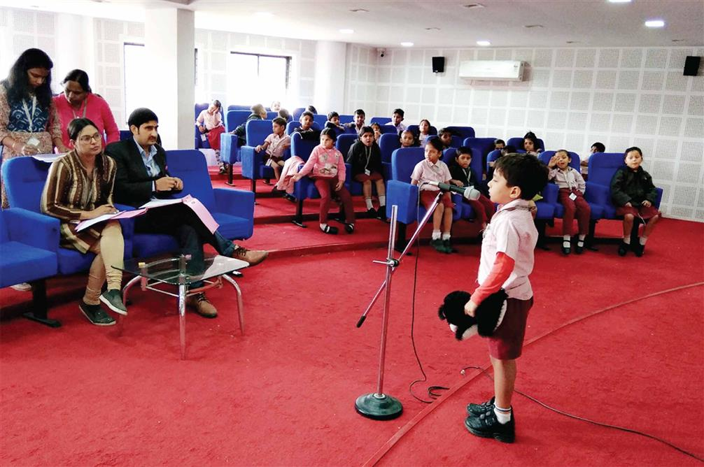
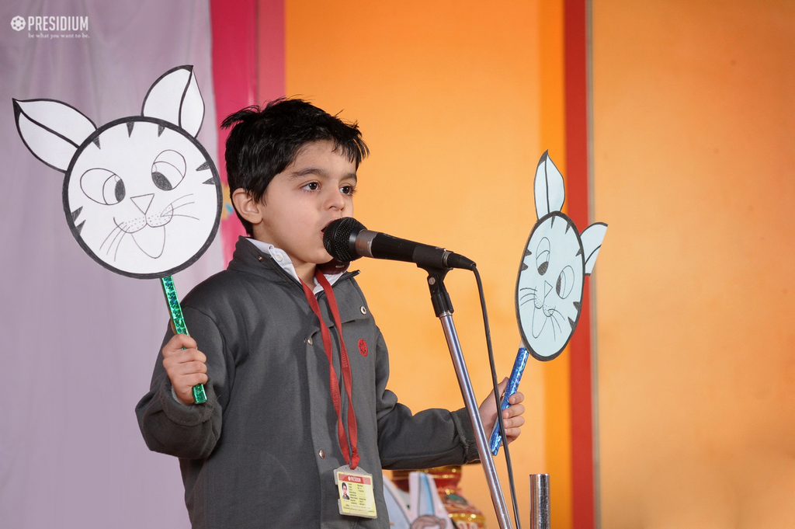

Date: 22 August 2021
Venue: Kuala Lumpur City Hall
Time : 9.00 a.m - 4.30 p.m
Story-telling competition is a competition which conducted at Kuala
Lumpur City Hall. It is a competition in which participants using their
abilities to use language, vocalization, and physical movement and gesture
to reveal or interpret the elements and images of a story to a specific,
live audience, so the audience can have a visual imagery and detail to
complete and co-create the story.The competition are split into two catagories which are solo and
groups; and split for Malay and English. Each team will have maximum 3 members.
We are welcoming the parents to come and support their children in the
competition.
The judges evaluate their performance for solo and groups based on these criteria:
- 30% for content
- 30% for performance
- 30% for creativity
- 10% for pronounciation
The champion will receive RM 300, medals and hampers; runner-up will receive RM 200, medals and hampers and 3rd place will receive RM 100 and hampers.
  